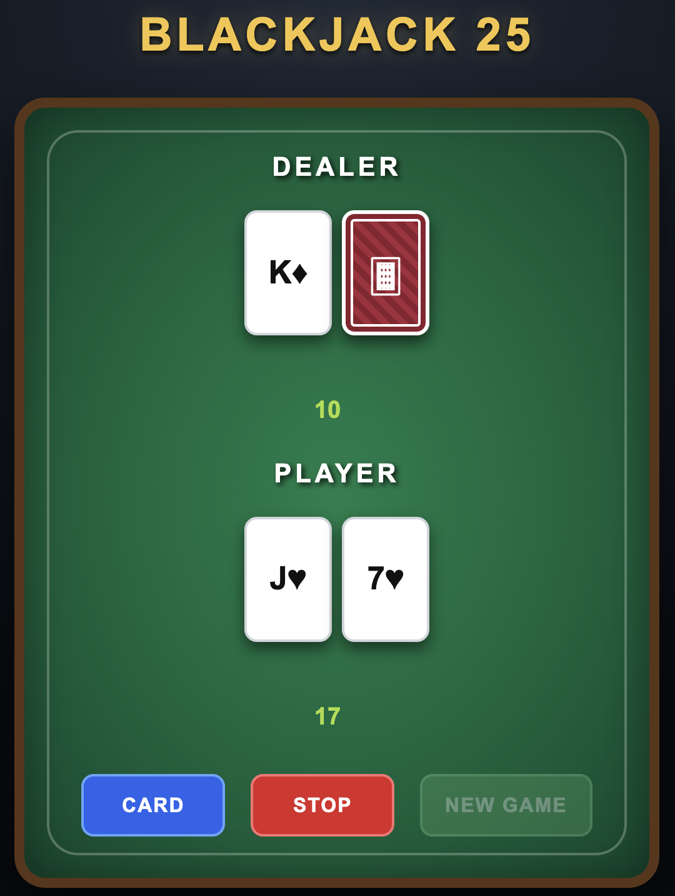
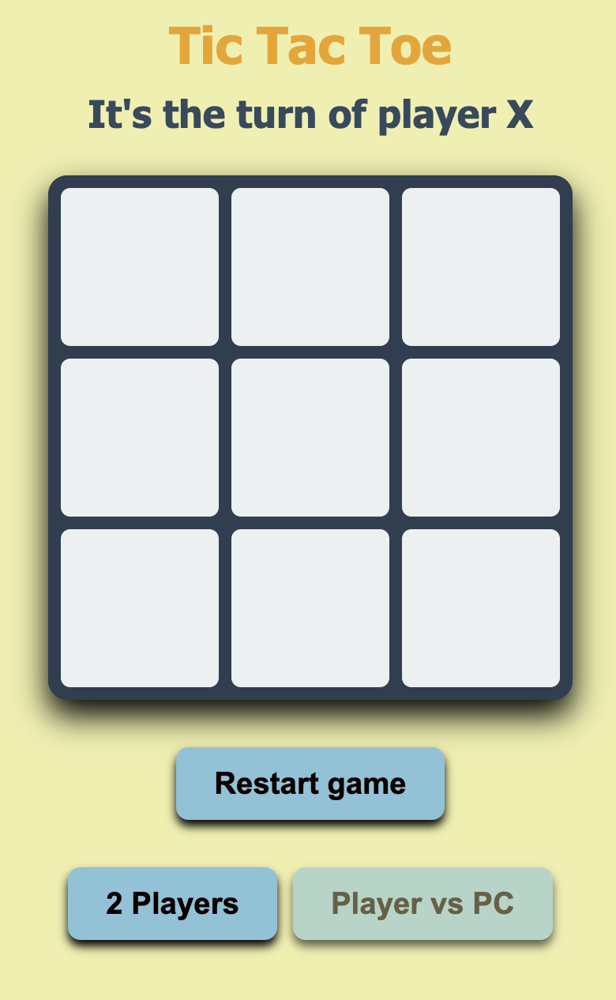
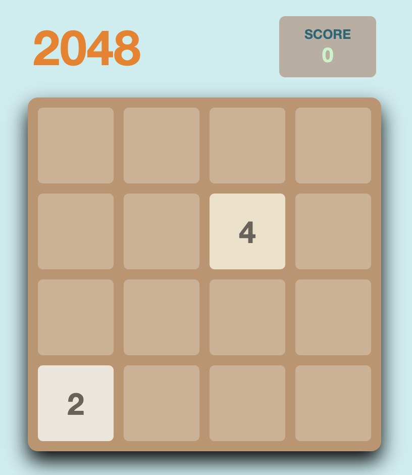

knowledge of HTML.
Use of CSS3 to style.
Familiarity with JavaScript.
Coding in Java and Python.
I'm a student at ISEL
in Informatics and Multimedia
Engineering, and have
a Google certification in
Cybersecurity, IT Support and
Data Analysis
Arcade and
board games
in Java

Try Blackjack game in ->
https://pgo46968.github.io/PCM_TP2/

Try Tic Tac Toe game in ->
https://github.com/pgo46968/Tic_Tac_Toe

Try 2048 game in ->
https://github.com/pgo46968/2048
Simulation in Java